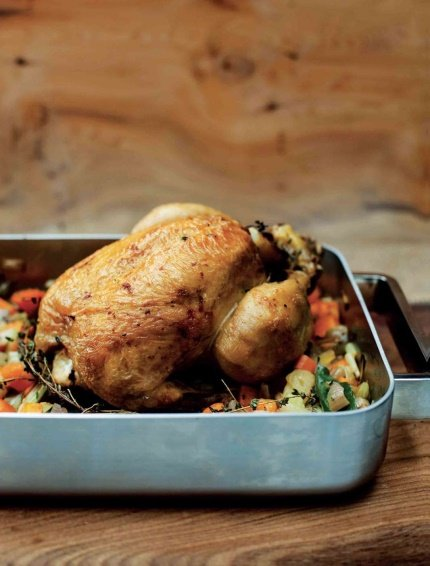

Roasted chicken with braised chicory wrapped in crispy pancetta

It’s difficult to beat a classic roast chicken with roast potatoes and seasonal vegetables, but this is a lovely twist for a lighter Sunday roast supper. I always enjoy the contrast of the same vegetable being served cooked and raw on the same plate and it works well here with chicory. Drizzle any juices from the rested chicken over the salad to enhance the balsamic dressing.
Mirepoix
To serve
Heat the oven to 180°C. Place the chicken on a board and remove the wishbone (this makes it easier to carve the bird). To do so, lift the skin from the back of the breast and run a sharp knife down either side of the wishbone to release it. Reach in with your fingers and pull out the bone.
Cut the lemon into 8 chunks and place in a bowl with the thyme, bay leaf, garlic and butter and season well. Stuff the lemon and butter mixture into the cavity of the chicken. Now drizzle a little olive oil over the chicken and season well with salt and cracked black pepper.
For the mirepoix, heat a heavy-based frying pan over a medium heat and add a drizzle of olive oil. Add the diced vegetables, thyme, bay leaf and garlic and sweat gently for 2–3 minutes. Transfer to a roasting tray.
Place the chicken on top of the mirepoix and roast in the oven for 50 minutes to 1 hour or until cooked through. To check, insert a needle into the thickest part of the thigh. If the juices run clear, the chicken is cooked.
When the chicken is cooked, lift it onto a warm plate and set aside to rest in a warm place for 10 minutes or so. Discard the mirepoix and spoon off any excess oil from the roasting tray. Put the tray over a medium heat and add a splash of water to deglaze, scraping the bottom of the tray to release any sediment.
Carve the chicken and serve with the chicory salad, braised chicory and the deglazed cooking juices spooned over.